Independent factorial ANOVA
Two or more independent variables with two or more categories. One dependent variable.
Independent factorial ANOVA
The independent factorial ANOVA analyses the variance of multiple independent variables (Factors) with two or more categories.
Effects and interactions:
- 1 dependent/outcome variable
- 2 or more independent/predictor variables
- 2 or more cat./levels
Assumptions
- Continuous variable
- Random sample
- Normally distributed
- Q-Q plot
- Equal variance within groups
- Ratio of observed sd’s
- Welch correction only exists for one-way ANOVA
Formulas
| Variance | Sum of squares | df | Mean squares | F-ratio |
|---|---|---|---|---|
| Model | \(\text{SS}_{\text{model}} = \sum{n_k(\bar{X}_k-\bar{X})^2}\) | \(k_{model}-1\) | \(\frac{\text{SS}_{\text{model}}}{\text{df}_{\text{model}}}\) | \(\frac{\text{MS}_{\text{model}}}{\text{MS}_{\text{error}}}\) |
| \(\hspace{2ex}A\) | \(\text{SS}_{\text{A}} = \sum{n_k(\bar{X}_k-\bar{X})^2}\) | \(k_A-1\) | \(\frac{\text{SS}_{\text{A}}}{\text{df}_{\text{A}}}\) | \(\frac{\text{MS}_{\text{A}}}{\text{MS}_{\text{error}}}\) |
| \(\hspace{2ex}B\) | \(\text{SS}_{\text{B}} = \sum{n_k(\bar{X}_k-\bar{X})^2}\) | \(k_B-1\) | \(\frac{\text{SS}_{\text{B}}}{\text{df}_{\text{B}}}\) | \(\frac{\text{MS}_{\text{B}}}{\text{MS}_{\text{error}}}\) |
| \(\hspace{2ex}AB\) | \(\text{SS}_{A \times B} = \text{SS}_{\text{model}} - \text{SS}_{\text{A}} - \text{SS}_{\text{B}}\) | \(df_A \times df_B\) | \(\frac{\text{SS}_{\text{AB}}}{\text{df}_{\text{AB}}}\) | \(\frac{\text{MS}_{\text{AB}}}{\text{MS}_{\text{error}}}\) |
| Error | \(\text{SS}_{\text{error}} = \sum{s_k^2(n_k-1)}\) | \(N-k_{model}\) | \(\frac{\text{SS}_{\text{error}}}{\text{df}_{\text{error}}}\) | |
| Total | \(\text{SS}_{\text{total}} = \text{SS}_{\text{model}} + \text{SS}_{\text{error}}\) | \(N-1\) | \(\frac{\text{SS}_{\text{total}}}{\text{df}_{\text{total}}}\) |
Example
In this example we will look at the amount of accidents in a car driving simulator while subjects where given varying doses of speed and alcohol.
- Dependent variable
- Accidents
- Independent variables
- Speed dose
- None / Small / Large
- Alcohol dose
- None / small / large
- Speed dose
Data
SS full model
| Variance | Sum of squares | df | Mean squares | F-ratio |
|---|---|---|---|---|
| Model | \(\text{SS}_{\text{model}} = \sum{n_k(\bar{X}_k-\bar{X})^2}\) | \(k_{model}-1\) | \(\frac{\text{SS}_{\text{model}}}{\text{df}_{\text{model}}}\) | \(\frac{\text{MS}_{\text{model}}}{\text{MS}_{\text{error}}}\) |
Predicts group means for each cell of the design:
speed alcohol accidents n
1 none (S) none (A) 2.1060 20
2 some (S) none (A) 2.9445 20
3 much (S) none (A) 3.8880 20
4 none (S) some (A) 3.4435 20
5 some (S) some (A) 4.7625 20
6 much (S) some (A) 5.5790 20
7 none (S) much (A) 5.2970 20
8 some (S) much (A) 6.5125 20
9 much (S) much (A) 7.5720 20Group means
SS model visual
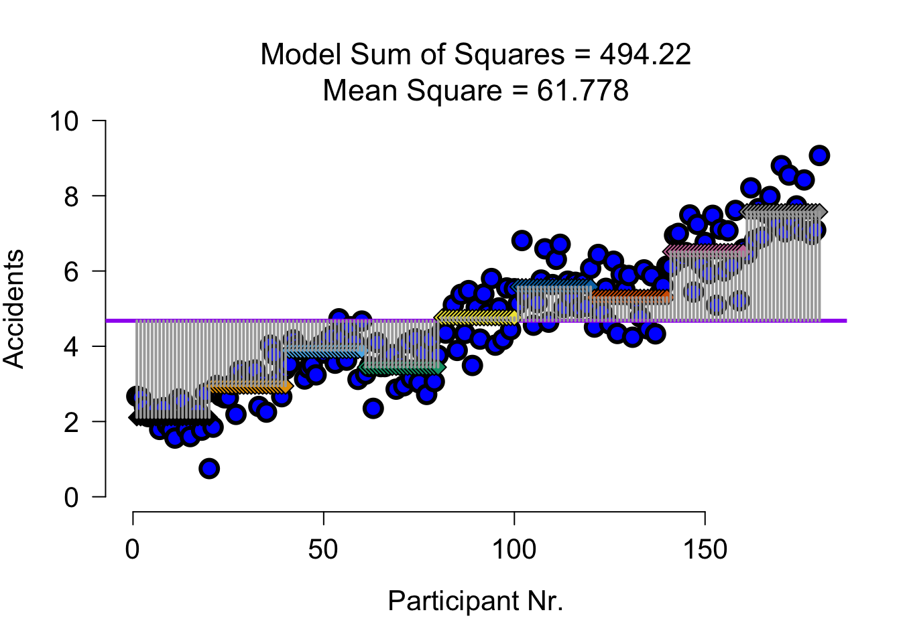
SS error
| Variance | Sum of squares | df | Mean squares | F-ratio |
|---|---|---|---|---|
| Error | \(\text{SS}_{\text{error}} = \sum{s_k^2(n_k-1)}\) | \(N-k\) | \(\frac{\text{SS}_{\text{error}}}{\text{df}_{\text{error}}}\) |
vars <- tapply(data$accidents, list(data$speed, data$alcohol), var)
vars none (A) some (A) much (A)
none (S) 0.2406147 0.2694555 0.5228011
some (S) 0.2947734 0.4218829 0.5624618
much (S) 0.2376063 0.4239884 0.5183326ss.error <- sum(vars * (ns - 1))
ss.error[1] 66.34642SS error visual
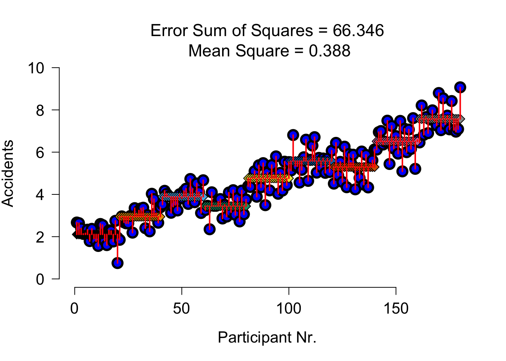
SS A Speed
| Variance | Sum of squares | df | Mean squares | F-ratio |
|---|---|---|---|---|
| \(\hspace{2ex}A\) | \(\text{SS}_{\text{A}} = \sum{n_k(\bar{X}_k-\bar{X})^2}\) | \(k_A-1\) | \(\frac{\text{SS}_{\text{A}}}{\text{df}_{\text{A}}}\) | \(\frac{\text{MS}_{\text{A}}}{\text{MS}_{\text{error}}}\) |
# m.s1 = mean(subset(data, speed == "none", select = "accidents")$accidents)
# m.s2 = mean(subset(data, speed == "some", select = "accidents")$accidents)
# m.s3 = mean(subset(data, speed == "much", select = "accidents")$accidents)
s.means <- tapply(data$accidents, data$speed, mean)
s.ns <- 60
s.meansnone (S) some (S) much (S)
3.615500 4.739833 5.679667 s.squares <- (s.means - mean(accidents))^2
s.squares none (S) some (S) much (S)
1.12961469 0.00378225 1.00266844 ss.speed <- sum(60 * s.squares)
ss.speed[1] 128.1639SS A Speed Visual
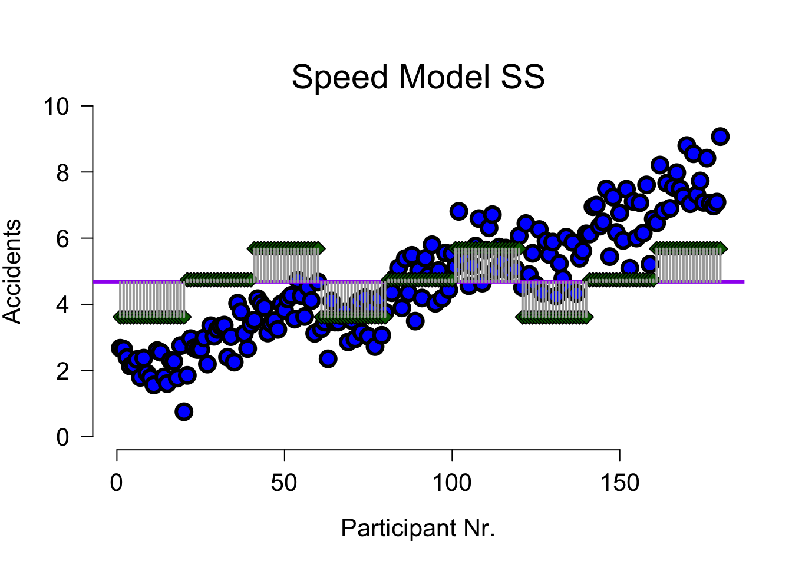
SS A Speed Error Visual
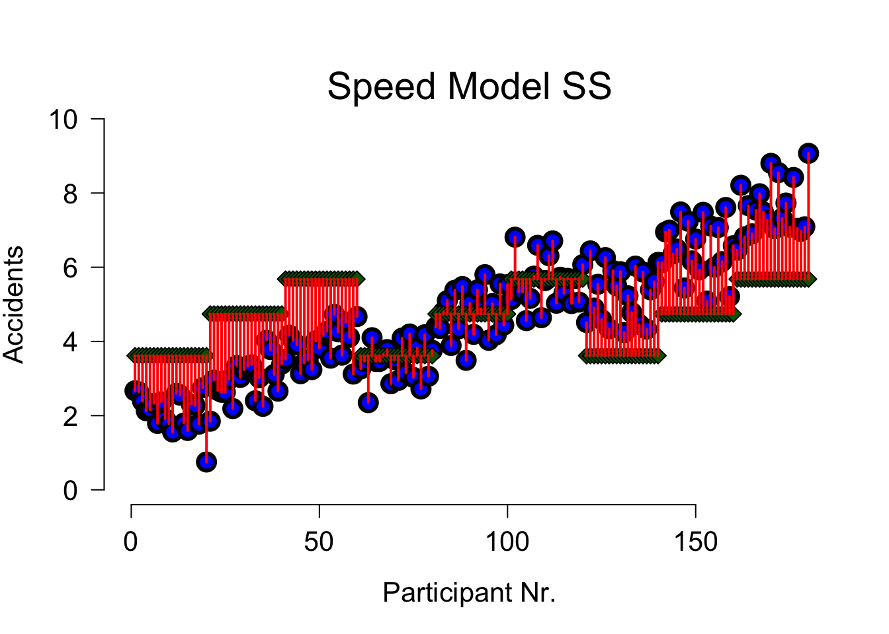
SS B Alcohol
| Variance | Sum of squares | df | Mean squares | F-ratio |
|---|---|---|---|---|
| \(\hspace{2ex}B\) | \(\text{SS}_{\text{B}} = \sum{n_k(\bar{X}_k-\bar{X})^2}\) | \(k_B-1\) | \(\frac{\text{SS}_{\text{B}}}{\text{df}_{\text{B}}}\) | \(\frac{\text{MS}_{\text{B}}}{\text{MS}_{\text{error}}}\) |
a.means <- tapply(data$accidents, data$alcohol, mean)
a.ns <- 60
a.meansnone (A) some (A) much (A)
2.9795 4.5950 6.4605 a.squares <- (a.means - mean(accidents))^2
a.squares none (A) some (A) much (A)
2.886034694 0.006944444 3.176118028 ss.alcohol <- sum(60 * a.squares)
ss.alcohol[1] 364.1458SS B Alcohol Visual
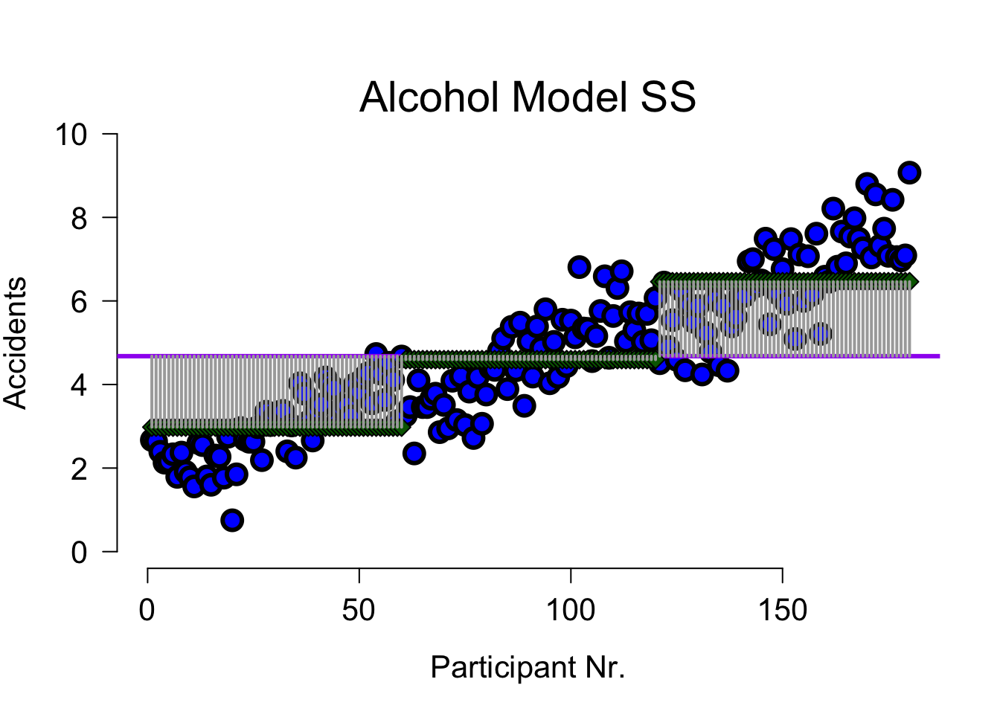
SS B Alcohol Error Visual
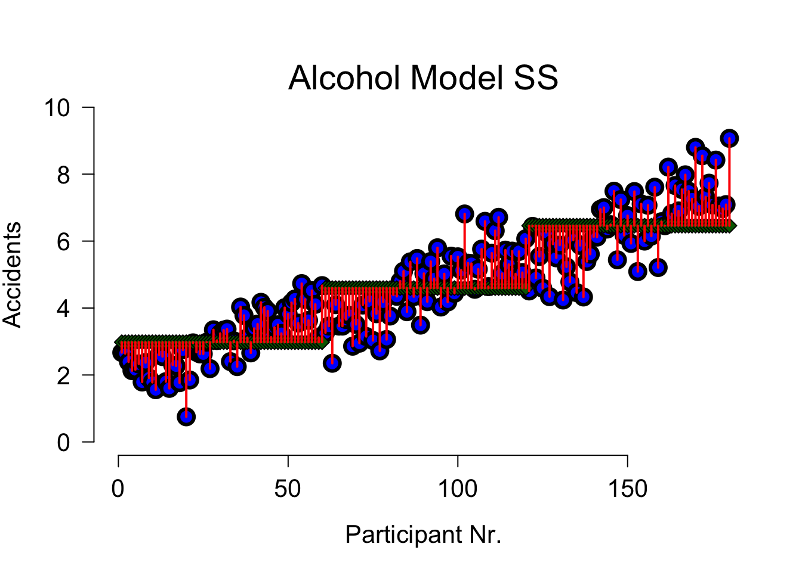
SS AB Alcohol x Speed
| Variance | Sum of squares | df | Mean squares | F-ratio |
|---|---|---|---|---|
| \(\hspace{2ex}AB\) | \(\text{SS}_{A \times B} = \text{SS}_{\text{model}} - \text{SS}_{\text{A}} - \text{SS}_{\text{B}}\) | \(df_A \times df_B\) | \(\frac{\text{SS}_{\text{AB}}}{\text{df}_{\text{AB}}}\) | \(\frac{\text{MS}_{\text{AB}}}{\text{MS}_{\text{error}}}\) |
# Sums of squares for the interaction between speed and alcohol
ss.speed.alcohol <- ss.model - ss.speed - ss.alcohol
ss.speed.alcohol[1] 1.910727Mean Squares
Mean squares for:
- Speed
- Alcohol
- Speed \(\times\) Alcohol
\[\begin{aligned} F_{Speed} &= \frac{{MS}_{Speed}}{{MS}_{error}} \\ F_{Alcohol} &= \frac{{MS}_{Alcohol}}{{MS}_{error}} \\ F_{Alcohol \times Speed} &= \frac{{MS}_{Alcohol \times Speed}}{{MS}_{error}} \\ \end{aligned}\]
Interaction
\[F_{Alcohol \times Speed}\]
N <- length(accidents)
k.speed <- 3
k.alcohol <- 3
k.model <- 9
df.speed <- k.speed - 1
df.alcohol <- k.alcohol - 1
df.speed.alcohol <- df.speed * df.alcohol
ms.speed.alcohol <- ss.speed.alcohol / df.speed.alcohol
df.error <- N - k.model
ms.error <- ss.error / df.error\(P\)-value
F.speed.alcohol <- ms.speed.alcohol / ms.error
F.speed.alcohol[1] 1.231168library(visualize)
visualize.f(F.speed.alcohol, df.speed.alcohol, df.error, section = "upper")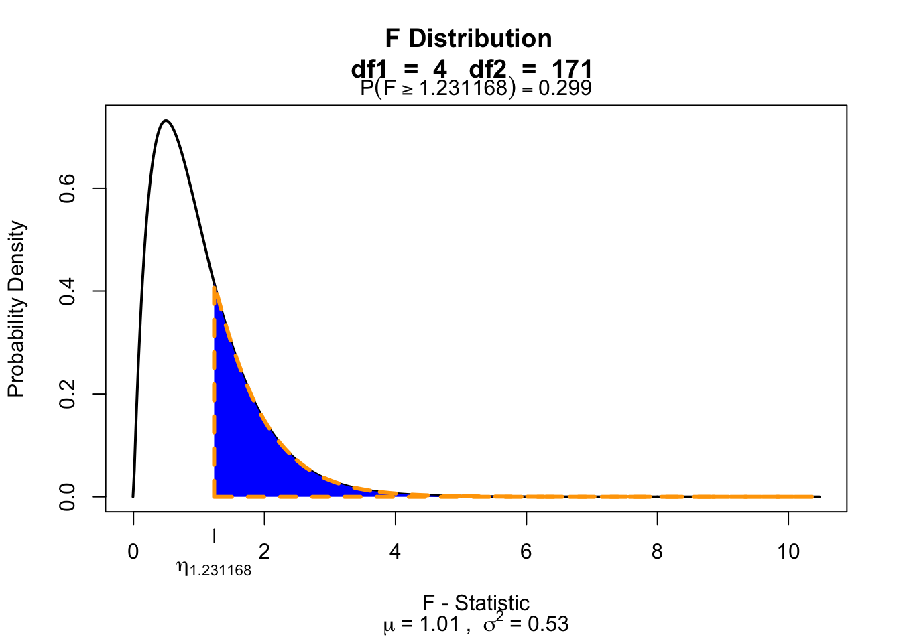
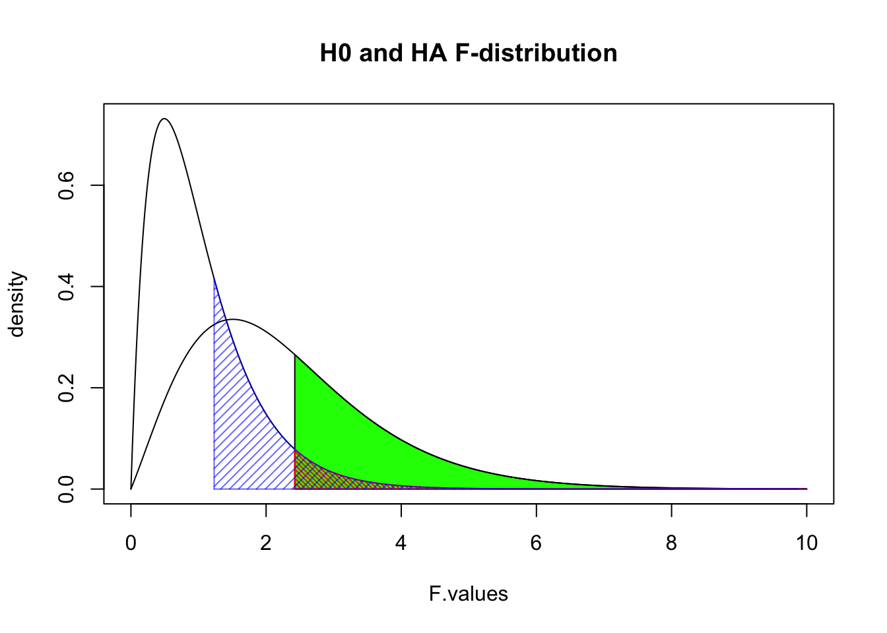
Partition the explained variance (BONUS)
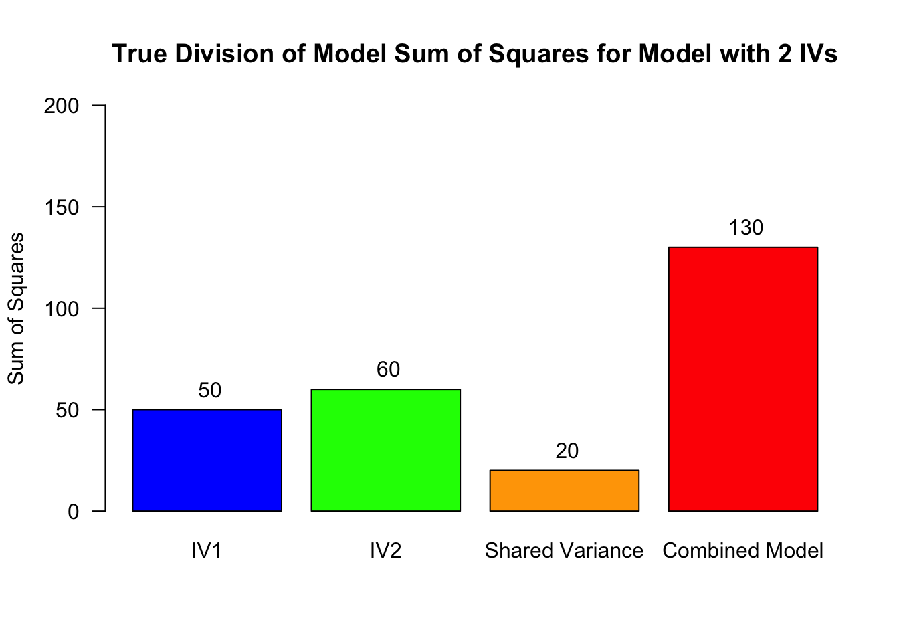
Partition the explained variance (BONUS)
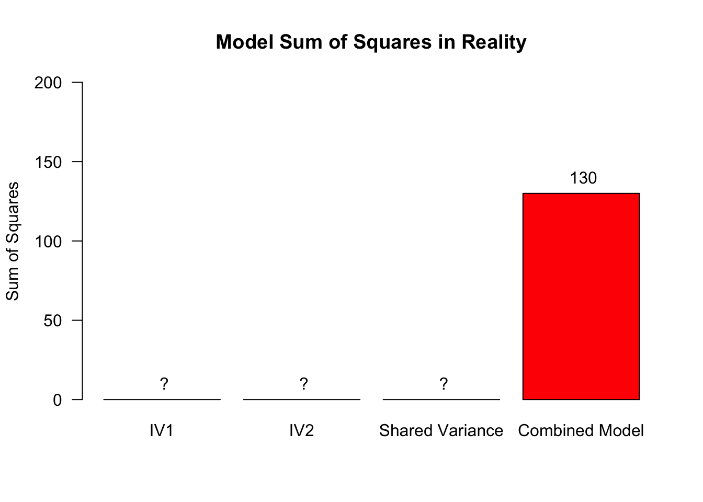
In reality, we do not know exactly how the shared variance is distributed across these three sources (IV1, IV2, shared)
Partition the explained variance (BONUS)
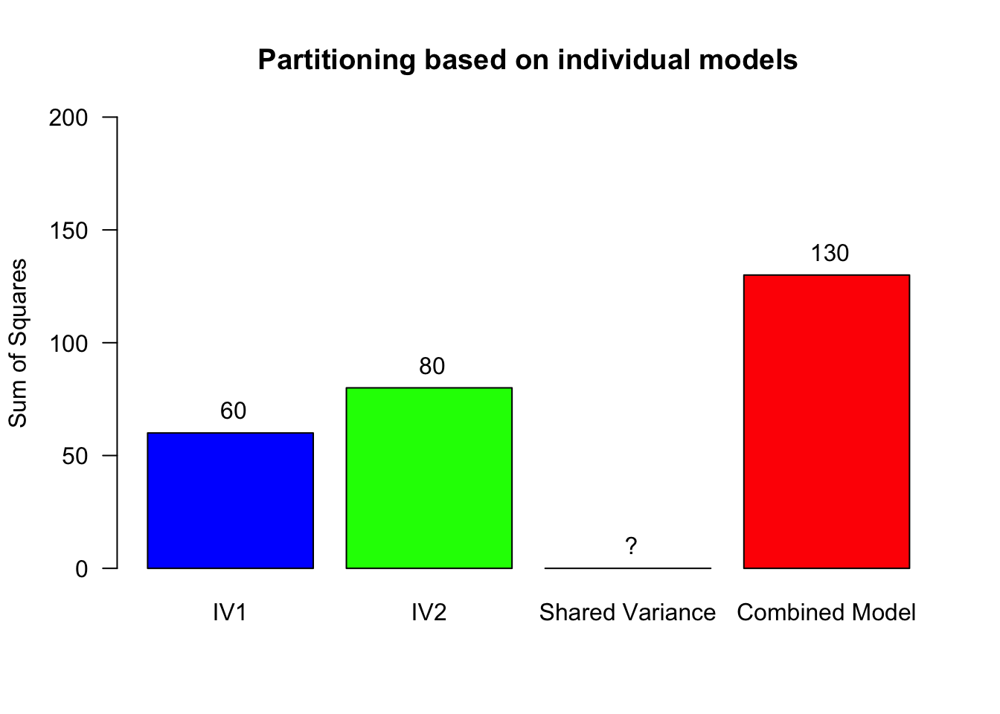
- Fit a model with only IV1, then use that to compute the explained variance for IV2: \(SS_{M1} = 70 \rightarrow SS_{IV2} = 130 - 70 = 60\)
- Fit a model with only IV2, then use that to compute the explained variance for IV1: \(SS_{M2} = 50 \rightarrow SS_{IV1} = 130 - 50 = 80\)
- See also Oliver Twisted from Chapter 13
Contrast
Planned comparisons
- Exploring differences of theoretical interest
- Higher precision
- Higher power
Post-Hoc
Unplanned comparisons
- Exploring all possible differences
- Adjust p-value for inflated type 1 error
- P(1 type-I error) = \(0.05\)
- P(not 1 type-I error) = \(0.95\)
- P(not 5 type-I errors) = \(0.95^5 = 0.774\)
- Bonferroni more conservative, Tukey more permissive
Exam note: know where the options are, exam question will inform you which correction to use
Effect size in ANOVA
General effect size measure: Partial omega squared \(\omega_p^2\)
How to interpret?
| \(\omega^2\) and \(\omega_p^2\) | Magnitude of Effect | Interpretation |
|---|---|---|
| 0.00–0.009 | Very small | Trivial practical importance |
| 0.01–0.05 | Small | Small but meaningful variance explained |
| 0.06–0.13 | Medium | Moderate variance explained |
| ≥ 0.14 | Large | Substantial variance explained |
Effect size in follow-up tests
Effect sizes of contrasts or post-hoc comparisons: Cohen’s \(d\)
How to interpret?
| Cohen’s d | Magnitude of Effect | Interpretation |
|---|---|---|
| 0.00–0.19 | Very small | Likely negligible in most contexts |
| 0.20–0.49 | Small | Noticeable but modest difference |
| 0.50–0.79 | Medium | Moderate, practically meaningful difference |
| ≥ 0.80 | Large | Substantial, easily noticeable difference |